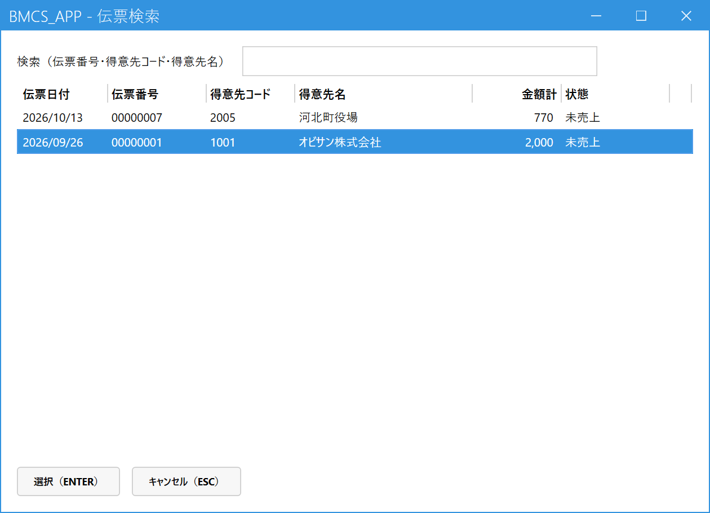
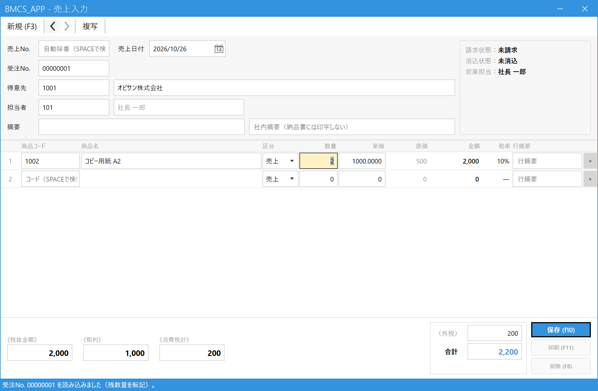
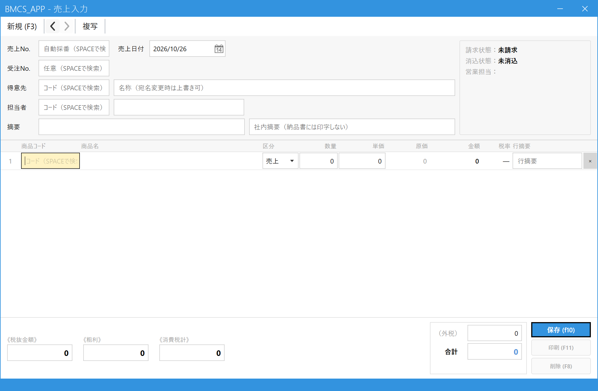

Register a Sale
Register a sale when you deliver (sell) products. The sale you register here is the basis for the delivery note and for the invoice you create later.
There are two ways to do it.
① You have already registered an order → call up the order and turn it into a sale (Chapter 2)
② You sold on the spot without an order → enter it directly (Chapter 3)
1.Open the Sales Entry screen
In the main menu, click Sales Entry (売上入力) under Orders / Sales (受注・売上).

- Click "Sales Entry (売上入力)".
2.[When you have an order] Call up the order and turn it into a sale
Press Space in the Order No. (受注No.) field to open a list of orders that can be turned into sales (orders that are already sold or discontinued do not appear). If you know the order number, you can also enter it and press Enter to load it.

- You can narrow down by slip number, customer code or customer name.
- Choose the order you want to turn into a sale (press Enter to move to the list, then press Enter again, or double-click).
- Confirm with "Select (Enter) (選択（Enter）)".
The contents of the order are filled into the detail lines. The quantity entered is the remaining quantity of the order that has not yet been turned into a sale, so if it differs from the quantity you delivered this time, correct the quantity (when delivering in parts, enter only the quantity delivered).

- Order No. (受注No.): The number of the order you called up.
- Customer (得意先): The customer of the order is filled in.
- Detail lines (明細): The products and unit prices of the order are filled in.
- Quantity (数量): Adjust it to the quantity actually delivered. You cannot register a quantity larger than the remaining quantity of the order.
- When the order loads successfully, the message "Order No. XX was loaded (受注No. ○○ を読み込みました)" appears at the bottom of the screen.
3.[When there is no order] Enter directly
Leave the Order No. (受注No.) empty and enter customer → product code → quantity in that order, in the same way as Order Entry (受注入力) (confirm the customer and product with Enter; press Space to search if you do not know the code).

- Customer (得意先): Enter the code and press Enter, or press Space to search. To change the addressee name just for this sale, overwrite the name field on the right.
- Product code (商品コード): Code + Enter, or press Space to search for a product.
- Type (区分): Normally this is "Sale (売上)". Switch it to "Return (返品)" or "Discount (値引)" here only when you are entering a return or a discount.
- Quantity (数量): The delivered quantity. The unit price is filled in automatically (overwrite it directly if you want to change it).
4.Save and issue the delivery note
Check the total and press Save (保存).
- Total (合計): The total amount including tax.
- Save (保存) (F10): Registers the sale.
- Print (印刷) (F11): Prints the delivery note when you have called up a registered sale (it cannot be pressed while entering a new sale).
- Press Save (保存) (F10).
- You are asked "Issue the delivery note for Sales No. XX? (売上No. ○○ の納品書を発行しますか？)". If you need the delivery note now, choose Yes (はい). A preview opens, and you print from there. If you will issue it later in a batch, choose No (いいえ) (you can issue it from "Bulk Delivery Note Issue (納品書一括発行)" in the menu).
- The message "Registered. Sales No. XX (登録しました。売上No. ○○)" appears at the bottom of the screen, and the screen is cleared.
5.Common operations
| What you want to do | What to do |
|---|---|
| View or correct a registered sale | Enter the number in the Sales No. (売上No.) field and press Enter, or press Space and choose from the list. Correct it and save. |
| Cancel a sale | Call up the sale and press the Cancel (Delete) (取消（削除）) button (F8) at the bottom right. The slip is not deleted; it is put in the "Canceled (取消)" state. |
| Reissue a delivery note | Call up the sale and press Print (印刷) (F11). |
| Register a sale with the same content as a past sale | Press Copy (複写) on the toolbar. |
| You cannot correct or cancel it | A sale cannot be changed if billing closing or monthly closing has been done for it, if a payment has been reconciled against it, and so on (edit lock). If you need to change it, you must go through a procedure such as releasing the closing. |